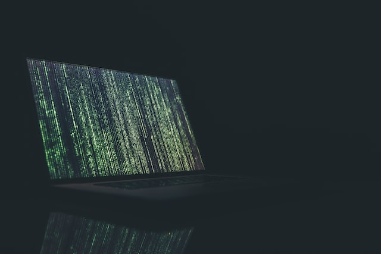

Cyber Crime

Halo, kembali lagi denganku. Pada kesempatan kali ini aku akan membagikan wawasanku mengenai Cyber Crime yang aku dapatkan setelah menghadiri kelas dengan mata kuliah "Etika Profesi" di Universitas Jember.
Mayantara
Mayantara (cyberspace) adalah sebuah dunia komunikasi yang basisnya adalah komputer dimana menawarkan realitas yang baru, yang belum pernah kita rasakan di dunia nyata, yaitu realitas virtual. Maka cyber crime diartikan sebagai penggunaan komputer sebagai alat untuk melancarkan tindakan kejahatan.
Permasalahan cyber crime dapat dibedakan menjadi dua, yaitu kejahatan yang berdampak pada perseorangan atau disebut mikro dan ada kejahatan yang berdampak pada lingkup yang lebih luas atau menimbulkan efek domino yang disebut makro.
Faktor yang mendorong seseorang untuk melakukan kejahatan di duunia maya sebagai berikut:
- Memungkinkan pelaku kejahatan untuk menyembunyikan jejaknya
- Tidak memiliki batas geografis
- Dapat dilakukan secara jarak dekat atau jauh
Secara garis besar, kejahatan yang berkaitan dengan teknologi informasi dapat dibedakan menjadi dua, yaitu kejahatan yang bertujuan merusak atau menyerang sistem atau jaringan komputer, dan kejahatan yang menggunakan komputer atau internet sebagai alat bantu dalam melancarkan kejahatan.
Pola kejahatan
- Interruption, merupakan suatu ancaman terhadap availibility, informasi atau data dalam komputer dirusak, dihapus, sehingga jika dibutuhkan sudah tidak ada lagi.
- Interception, merupakan ancaman terhadap kerahasiaan (secrecy), informasi yang ada didalam sistem disadap oleh orang yang tidak berhak.
- Modification, merupakan ancaman terhadap integritas. Orang yang tidak berhak berhasil menyadap lalu lintas informasi yang sedang dikirim lalu mengubahnya sesuai keinginannya.
- Fabrication, merupakan ancaman ancaman terhadap integritas. Orang yang tidak berhak berhasil meniru atau memalsukan suatu informasi sehingga orang yang menerima informasi menyangka informasi tersebut berasal dari orang yang dikehendaki oleh si penerima informasi tersebut.
Jenis-Jenis Cyber Crime
Berdasarkan beberapa isu yang menjadi bahan studi atau penyelidikan pihak FBI dan National White Collar Crime Center:
- Computer network break-ins
- Industrial espionage
- Software piracy
- Child pornography
- E-mail bombings
- Password sniffers
- Spoofing
- Credit card fraud
Berdasarkan perundang-undangan di Indonesia:
- Illegal access, akses tidak sah terhadap sistem komputer.
- Data interference, mengganggu data komputer.
- System interference, menganggu sistem komputer.
- Illegal interception, intersepsi secara tidak sah terhadap operasional komputer, sistem, dan jaringan komputer.
- Data theft, mencuri data.
- Data leakage and espionage, membocorkan data dan memata-matai.
- Missue of devices, menyalahgunakan peralatan komputer.
- Credit card fraud, penipuan kartu kredit.
- Bank fraud, penipuan bank.
- Service offered fraud, penipuan melalui penawaran suatu jasa.
- Identity theft and fraud, pencurian identitas dan penipuan.
- Computer-related fraud, penipuan melalui komputer.
- Computer-related forgery, pemalsuan melalui komputer.
- Computer-related betting, perjudian melalui komputer.
- Computer-related extortion and threats, pemerasan dan pengancaman melalui komputer.
- Child phornography, pornografi anak.
- Infringements of copyright and related rights, pelanggaran terhadap hak cipta dan hak-hak terkait.
- Drug traffickers, peredaran narkoba.
Pencegahan
Berikut adalah hal-hal yang dapat dilakukan untuk mencegah cyber crime:
- Pastikan sistem komputer diperbarui di versi terbaru
- Konfigurasi sistem dengan aman
- Pilih kata sandi yang kuat dan melindunginya
- Install atau perbarui antivirus dan perangkat lunak
- Lindungi informasi milik Anda
- Baca kebijakan privasi situs
- Tinjau laporan keuangan secara teratur
- Matikan komputer anda
Setelah mendapatkan materi ini, aku jadi teringat salah satu temanku yang terkena kasus penipuan di dunia maya. Saat itu, teman saya mendapatkan pesan bahwa dia mendapatkan hadiah jutaan rupiah. Namun si pelaku meminta kode OTP akun perbankan milik teman saya dan teman saya menurutinya saja. Kemudian dalam waktu yang singkat, pihak bank memberi notifikasi bahwa ia harus menanggung sekian jutaan rupiah. Lalu teman saya tersadar bahwa ia telah ditipu. Menurut pengakuannya, ia merasa dihipnotis oleh pelaku sehingga ia bisa menuruti semua perintahnya. Mengerikan, ya!